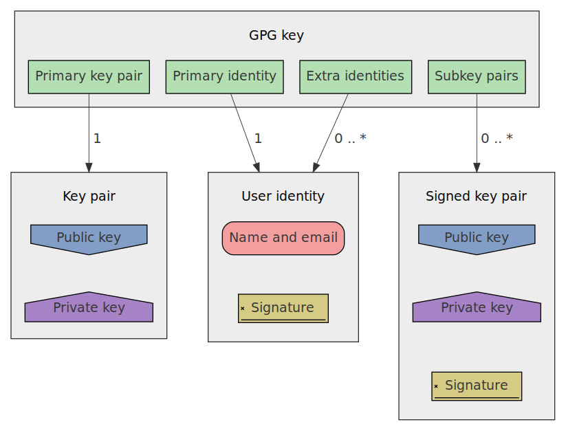

Dev Team Secrets

2020-05-19
Motivation
Use cases
- Personal passwords
- Sharing encrypted data
- Commiting prod.env
Why gpg+git+gopass?
- auditable sources
- good encryption
- no 3rd parties, no trust
- easy integration via cli
Introduction
pgp, gpg, etc
- Pretty Good
- OpenPGP (pgp)
- GnuPG (gpg)
gpg capabilities
- sign
- encrypt
- authenticate
- certify
gpg anatomy

gpg example
gpg --output myfile.txt.gpg --encrypt --recipient andrew@trop.in myfile.txt
gpg --output myfile.txt --decrypt myfile.txt.gpg
Demonstration 1
browser/phone
Questions
Demonstration 2
secrets exchange
Questions
Notes
Init store
In case you don't have gpg key use gpg --gen-key.
gopass init
Clone exitisting store
gopass clone git@gitservice.com:user/repo.git local-store-name
gopass sync --store local-store-name
sync will pull remote update, push local updates and will add all public key available in remote password store to local keychain.
Managing recepients
On each action with recepients all secrets that you have access to will be re-encrypted.
gopass recepients add --store local-store-name
gopass recepients remove --store local-store-name
Contacts
- andrew@trop.in
- tg: @tropin_channel
- github: @abcdw